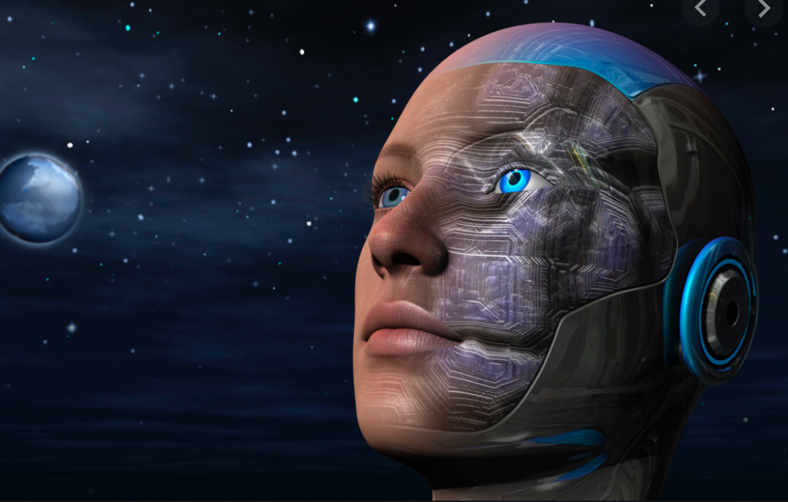

>>>Dehumanizing
>>>Damage the dignity of human beings and weaken the inherent value of human beings
----------------------------------------------------------------------------------------------------------------------------------------------------------- 
From the perspective of bioconservatism, human enhancement technology may lead to dehumanizing, which may damage human dignity and weaken the inherent value of human beings. These dignity and values are difficult to explain with language, fixed factors, and cost-benefit analysis methods. Therefore, it is recommended to It is forbidden to use enhancement technology globally to prevent the loss of humanity and the emergence of post-humanity
According to the interpretation of the biomedical paradigm, human enhancement is an intervention, and this intervention can enhance human functions and exceed the necessary conditions for maintaining human health.
However, there are certain scientific and ethical ambiguities in the "disease and health" that is the basis of treatment and enhancement. First of all, we lack a unified and clear concept of health and disease, so this boundary is difficult to define. Second, the theories of disease and health mostly involve normative judgments, which are not purely objective. Third, although there are some clear treatment and enhancement cases (such as cancer chemotherapy is treatment, and cosmetic surgery is enhancement), there are also a large number of medical interventions that cannot be clearly defined (such as the use of growth hormone to promote the growth of short children). It is between treatment and enhancement).
Finally, the implicit meaning of the distinction between treatment and enhancement is: treatment is a kind of good medical behavior, while enhancement is considered an evil intervention or at least a morally suspicious behavior.
Made 1 March 2021
thanks to W3C for tutorial and adapted code from Style Examples
also thanks to WDN for HTML and CSS resources and any adapted code snippets from Mozilla Developer Network